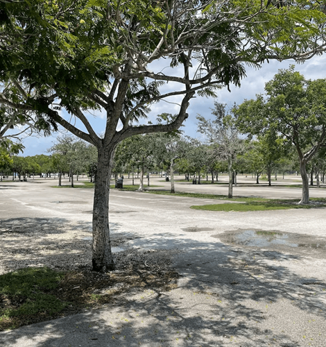
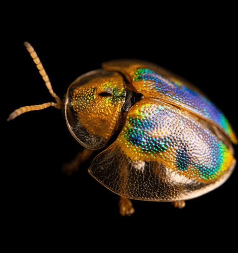
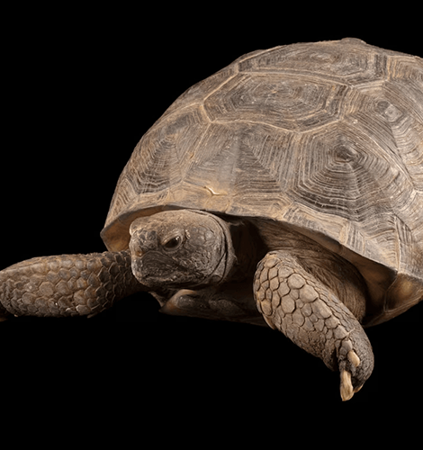

NATIONAL GEOGRAPHIC
Is this paradise or a parking lot This Florida ecosystem is a battleground.
ANIMAL
- 
- 
- 
In healthy pine rockland, hundreds of species of wildflowers and palms as well as lush hardwood shrubs grow on rocky, sometimes-sandy soil. These forests once covered more than 186,000 acres of South Florida, including most of urban Miami- Dade County. Because of rapid urban development, less than two percent of that ecosystem outside the Everglades remains today, according to the Tropical Audubon Society. What’s left provides habitats for more than three dozen imperiled species, including the Florida leafwing butterfly, the Miami tiger beetle, and the Florida bonneted bat.
This patch of pine rockland is adjacent to the site of a proposed water park and shopping complex called Miami Wilds. The controversial project has been under discussion since 1997, but little progress has been made. The plans for this plot originally included a 200-room hotel and spa, but over time, public outcry and legal challenges over environmental risks have winnowed the plans down to a water park, a smaller hotel, and a handful of shops. These plans include six million dollars to be set aside for pine rockland restoration efforts, says Miami Wilds developer Paul Lambert, founder of the group Lambert Advisory. “This part of the county has always been the most moderate-income area of the county with the lowest number of jobs,” he says. “By our numbers, it’s going to create over 400 jobs.”
The remaining 4,000 acres or so of pine rocklands in Florida are in jeopardy. Development has taken over much of what used to be pine rockland, and the remaining plots are fragmented, according to Miami-Dade County. In this parcel outside Miami, the land has been largely ravaged by the overgrowth of native palms and shrubs as well as invasive plant species such as the Brazilian peppertree, a shrub-like tree with red berries, and the Burma reed, a tall grass species.
Though it is threatened, this parcel is “the most important fragment of pine rockland left outside of Everglades National Park,” says Lauren Jonaitis, senior conservation director for the Tropical Audubon Society.
The ecosystem’s success once relied on periodic fires, which would promote germination of pine seeds and reduce invasive plants, among other benefits. But as Miami grew to become the city it is today, fires were suppressed, and prescribed burns became a risky option so close to human settlements, according to the Tropical Audubon Society. Now both native and invasive plants have become overgrown, sapping precious resources and smothering other forms of life that require sunlight and exposed limestone ground, Gann says.
The loss of species in these regions could wreak havoc on the local environment both bats and beetles keep insect populations in check, and butterflies act as critical pollinators for local plant life. “The extinction of one species can affect the entire ecosystem,” Jonaitis says. “You pull the loose thread … it can unravel an entire sweater.”
As I stepped over sprawling plant growth more carefully this time we spotted a Bartram’s scrub-hairstreak butterfly, perched on a thin stem. About the size of my thumbprint, gray with white and black bands and a distinctive orange splotch on its wing, I almost missed it. Until recently, no one had seen the elusive butterflies in more than six months.
“Just think,” said an awed Dennis Olle, director of conservation for the Miami Blue Chapter of the North American Butterfly Association. “You’re one of the few people in the world that’s seen a Bartram’s hairstreak.”
Paving paradise?
In 2014 a county commissioner sought to declare the pine rocklands outside Miami a slum or “blighted area” an area detrimental to public safety, health, or morals. But thanks to conservation efforts, Gann says, the ecosystem is healing.
Gann describes the work to restore Florida’s pine rocklands as a mix between forestry and landscaping. Some days, his team brings in professionals to set fires to eliminate plants like overgrown shrubs in a habitat some 20 miles from the heart of bustling Miami. Other times, they cut down overly dense pines or invasive fire resistant Burma reeds with chainsaws. Many days are spent methodically administering tablespoons of herbicide to the bases of invasive plants, so as not to poison their native neighbors.
Constructing Miami Wilds is not so much about paving paradise and putting up a parking lot—it’s already a parking lot. During the day, Zoo Miami’s one million visitors per year park here, in a lot that abuts a plot of the Richmond Pine Rocklands, the site of Gann’s restoration project. Some of the lot would be used for the water park, and the rest would be used for both water park and zoo parking.
But some wildlife advocates like Gann argue this space is significant since it’s adjacent to an imperiled ecosystem. As recently as 2021, endangered Miami tiger beetles have been found on the fringes of this property, according to the Tropical Audubon Society. And approximately 100 Florida bonneted bats part of the largest remaining population of the most endangered bat in the country are known to feed on insects in the parking lot at night, according to the Tropical Audubon Society.
A spokesperson for the Miami Wilds project said in an email that while bats fly over the property, “they are feeding above the parking lots in very low numbers.” He also emphasized that the species’ critical habitat does not overlap with the main paved site for the proposed water park, and regarding the parking lot that overlaps with tiger beetle habitat, he said he’s “not even sure if it qualifies for habitat because it has been paved.”
Comments :
- john Very good
- john Very good
Leave a Reply
Your email address will not be published. Required fields are marked*
Related posts:
-
 Got a cold Here’s how your immune system is fighting it.
Got a cold Here’s how your immune system is fighting it.All day every day, a host of potential invaders attacks the body, particularly during the indoor season in cold climates. These microorganisms, called pathogens, come in the form of viruses, bacteria, parasites, and fungi, and the body’s immune
View article -
 2024 may bring the best auroras in 20 years
2024 may bring the best auroras in 20 yearsA particularly intense solar storm eruptions that propel electrically charged particles at high speeds away from the sun caused aurora borealis to be seen at latitudes much farther south than usual, with sightings in Virginia
View article -
 Walking is the sixth vital sign. Here’s how to do it right.
Walking is the sixth vital sign. Here’s how to do it right.Walking might seem simple. But it’s not, explains epidemiologist Peggy Cawthon, science director of the California Pacific Medical Center Research Institute. It’s an amazingly complex behavior that continues
View article